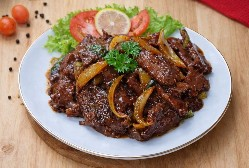
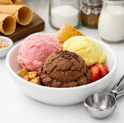
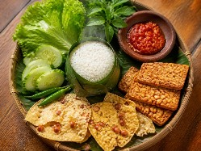
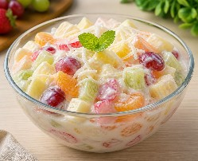
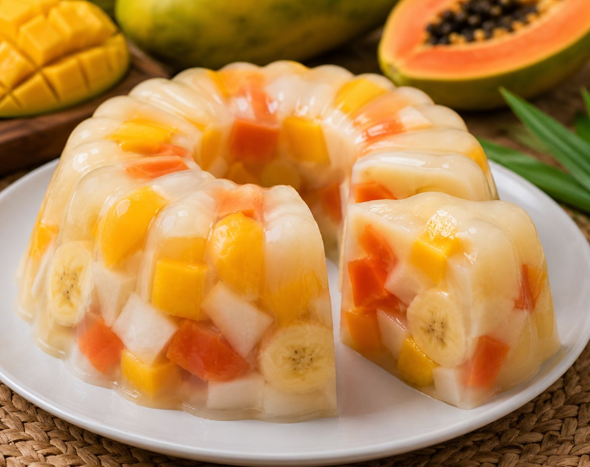
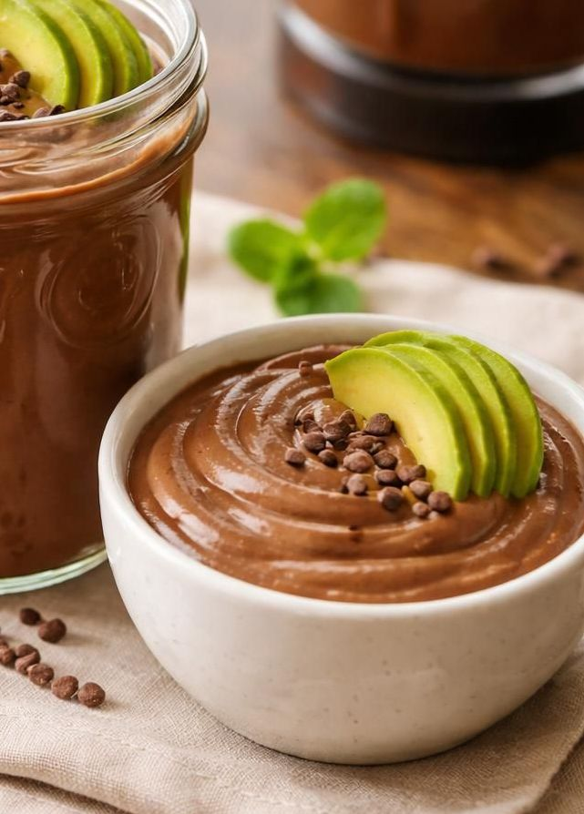

Selamat datang!
Situs ini menyajikan tips-tips, resep masakan, jajanan, minuman, dan info seputar kuliner yang unik dan lezat.

Kalau Anda ingin mencoba masakan daging sapi yang berbeda dari biasanya, resep ini bisa menjadi pilihan yang menarik. Perpaduan rasa gurih, manis, sedikit pahit, pedas, dan segar membuat hidangan ini terasa istimewa. Resep ini cocok untuk makan malam bersama keluarga atau untuk disajikan saat ada acara khusus.
Daging sapi biasanya dimasak dengan bumbu yang cenderung umum, seperti kecap, lada, atau bawang. Pada resep ini, daging sapi diberi sentuhan kopi dan kakao untuk menghasilkan rasa yang lebih dalam dan kompleks.

Pernahkah anda mencoba membuat es krim di rumah, tapi hasilnya justru keras seperti batu es atau berbutir kasar? Jangan khawatir, anda tidak sendirian! Banyak orang mengira kunci es krim enak hanya ada pada mesin mahal, padahal rahasianya terletak pada ilmu di balik bahan dan tekniknya.
Kali ini, kita akan membongkar dapur rahasia agar es krim buatan anda memiliki tekstur yang lembut, creamy, dan lumer di mulut, persis seperti yang anda beli di gerai mahal. Yuk, simak tips berikut!

Kuliner Sunda dikenal dengan konsep "Segar, Asin, Pedas" yang selalu berhasil menggugah selera. Di antara banyaknya hidangan khas Sunda, ada satu kombinasi klasik yang kerap menjadi favorit banyak orang: Nasi Timbal dan Lalapan. Bukan sekadar nasi dan sayur, hidangan ini menyimpan keunikan rasa dan filosofi tersendiri.
Kerang hijau merupakan salah satu hidangan laut (sea food) favorit banyak orang karena rasanya gurih dan teksturnya lembut. Salah satu olahan yang populer adalah kerang hijau bumbu kuning. Kuah rempahnya harum, segar, dan cocok disantap bersama nasi hangat.
Namun, sebelum dimasak, kerang hijau perlu dibersihkan dengan benar agar tidak amis dan bebas pasir.
Siapa yang bisa menolak kelezatan waffle hangat di pagi hari atau sebagai teman minum teh sore? Waffle memang makanan yang sangat versatile. Bisa manis, bisa gurih, tergantung selera.
Hari ini, aku mau berbagi resep waffle andalan yang crispy di luar namun lembut di dalam. Yang bikin spesial? Kita akan berkreasi dengan topping! Bayangkan kombinasi madu yang manis alami, keju gurih yang meleleh, krim lembut, dan kesegaran ceri diatas kue waffle yang memikat.

Siapa yang bisa menolak segarnya semangkuk salad buah di sore hari yang panas? Di Indonesia, salad buah bukan sekadar hidangan penutup, tapi juga cemilan sehat yang mudah ditemui, baik di pedagang kaki lima maupun restoran berbintang.
Namun, rahasia utama kenikmatan salad buah sebenarnya bukan terletak pada buahnya saja, melainkan pada saus atau dressing yang digunakan. Saus inilah yang menyatukan berbagai tekstur dan rasa buah menjadi satu keharmonisan rasa...
Sayur asem biasanya dikenal sebagai masakan rumahan yang sederhana. Tapi sebenarnya, dengan sedikit kreativitas, sayur asem bisa dibuat lebih unik, segar, dan menarik tanpa menghilangkan cita rasa tradisionalnya.
🥬 Resep Sayur Asem Bening Green Tomato
🛒 Bahan-bahan:- 1 buah jagung manis, potong-potong...
Siapa yang tidak tergoda dengan semangkuk ayam berkuah hangat? Mulai dari soto ayam, opor, gulai, hingga sup ayam, hidangan ini selalu jadi andalan di meja makan. Namun, seringkali kita kecewa karena hasil masakan justru aromanya kurang tajam, beraroma aneh atau terasa terlalu berat.
Nah, jika Anda mengalami masalah serupa, jangan khawatir! Ada rahasia sederhana yang bisa Anda coba. Tidak perlu bahan-bahan mahal, cukup terapkan langkah-langkah berikut ini...
Resep Pudding Buah-buahan Lokal yang Segar dan Lezat

Hai pecinta kuliner sehat! Apakah anda ingin mencicipi dessert yang tidak hanya lezat tapi juga sehat dan penuh nutrisi? Coba buat pudding dari bahan buah-buahan lokal yang mudah dan menyegarkan ini. Selain rasanya yang manis alami, pudding ini juga kaya akan vitamin dan serat dari buah-buahan segar. Yuk, simak resepnya!
Bahan-bahan:
- 1 buah mangga matang, potong dadu
- 1 buah pepaya matang, potong dadu
- 1 buah pisang matang, iris tipis
- 1L santan kelapa muda
- 2 sdm agar-agar bubuk (tanpa rasa)
- 100g (~10 sdm) gula pasir (sesuai selera)
- ¼ sdt garam
- 1 sdt vanili bubuk (opsional)
- Daun mint segar untuk hiasan (opsional)
Cara Membuat:
-
Siapkan Buah-buahan: Cuci bersih semua buah dan potong sesuai ukuran yang diinginkan. Sisihkan.
-
Rebus Santan dan Agar-agar: Dalam panci, campurkan santan, agar-agar bubuk, gula, dan vanili. Aduk rata dan panaskan di atas api sedang sambil terus diaduk sampai mendidih dan agar-agar larut sempurna.
-
Menyusun Pudding: Tuang sebagian adonan agar-agar ke dalam cetakan kecil atau loyang, lalu biarkan agak mengeras selama 10 menit. Setelah itu, susun buah-buahan di atasnya secara merata.
-
Tuang Sisa Adonan: Tuang sisa adonan agar-agar di atas buah-buahan hingga tertutup semua. Dinginkan dalam lemari es minimal 2 jam hingga pudding benar-benar mengeras.
-
Hias dan Sajikan: Setelah pudding jadi, keluarkan dari cetakan, hias dengan daun mint segar, dan sajikan dingin.
Tips:
- Anda bisa menambahkan buah-buahan lokal lain seperti potongan daging buah rambutan, manggis, cempedak, durian, atau srikaya sesuai selera.
- Jika ingin pudding yang lebih manis, tambahkan gulanya menjadi 120g (~12sdm).
- Untuk varian lebih sehat, ganti gula pasir dengan madu atau sirup maple.
- Buah-buahan potong boleh dikukus dulu jika diinginkan. Mengukus buah sebelum dimasukkan ke dalam pudding bisa membantu mengurangi rasa keras atau mentah pada buah, serta membuat teksturnya lebih lembut dan menyatu dengan pudding. Selain itu, pengukusan juga bisa membantu menghilangkan kelebihan air dari buah agar tidak mengencerkan tekstur pudding. Pastikan buah dikukus sebentar saja agar tidak terlalu lembek dan tetap memberikan tekstur yang menyenangkan dalam pudding.
Nikmati Sensasi Segarnya!
Pudding buah-buahan lokal ini cocok dinikmati sebagai dessert setelah makan siang atau sebagai camilan sehat di siang hari. Selain rasanya yang manis alami, kandungan serat dan vitaminnya akan membuat tubuh anda lebih energik dan sehat.
Resep Pudding Coklat Susu Alpukat yang Creamy dan Lezat

Kalau anda suka pudding yang rasanya lembut dan kaya akan rasa, boleh coba resep pudding coklat susu alpukat ini. Kombinasi alpukat yang lembut dengan coklat dan susu membuat pudding ini sangat nikmat, creamy, dan sehat. Selain itu, bahan-bahannya mudah didapat dan proses pembuatannya pun simpel. Yuk, kita buat bersama!
Bahan-bahan:
- 2 buah alpukat matang, ambil dagingnya
- 500 ml susu cair (bisa susu sapi atau susu almond)
- 4 sdm bubuk coklat tanpa gula
- 4 sdm madu atau pemanis alami lain sesuai selera
- 1 sdt vanili bubuk (opsional)
- 1 sdm agar-agar bubuk
- Serutan coklat atau 1 alpukat lagi untuk hiasan (opsional)
Cara Membuat:
- Siapkan Bahan: Kupas alpukat dan ambil dagingnya. Pastikan alpukat matang dan lembut agar mudah di blender.
- Masak: Larutkan agar-agar, susu, coklat bubuk, vanili, dan madu di atas kompor. Masak hingga mendidih dan agar-agar benar-benar larut (jangan lupa diaduk terus).
- Blender: Matikan api. Biarkan uap panasnya sedikit hilang (hangat kuku), jangan langsung. Masukkan daging alpukat ke dalam blender, tuang adonan susu coklat panas tadi ke dalam blender. Kemudian blender hingga halus. (Cara ini membuat tekstur pudding sangat lembut tidak berbutir).
- Tuang ke cetakan dan dinginkan.
- Hias dan Sajikan: Setelah pudding jadi, beri irisan alpukat atau taburi serutan coklat sebagai hiasan. Sajikan dingin.
Tips:
- Untuk rasa yang lebih gurih, tambahkan sedikit garam pada adonan.
- Jika ingin pudding yang lebih ringan (tidak padat & kenyal), pakai 1 alpukat saja.
- Jika Anda suka pudding yang lebih manis, Anda bisa tambahkan madunya menjadi 5-6 sdm, atau tambahkan 1 sdm gula pasir.
Selamat Menikmati!
Pudding coklat susu alpukat ini cocok dinikmati sebagai dessert sehat, creamy dan kenyal. Selain rasanya yang memanjakan, kandungan alpukat dan coklat memberikan manfaat baik untuk kulit dan energi. Coba buat di rumah dan rasakan sendiri kelembutan serta kelezatannya!
Selamat mencoba resep pudding buah-buahan lokal dan pudding coklat susu alpukat ini di rumah, dan bagikan pengalaman anda ke teman-teman!